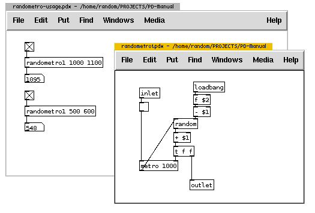
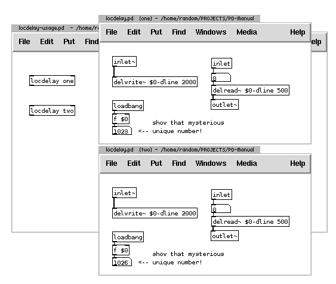
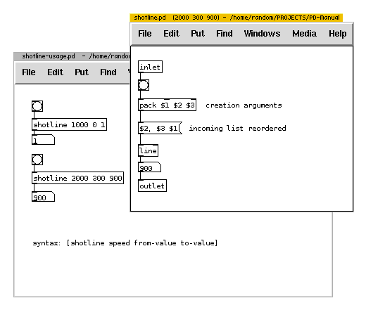

Dollar Sign Arguments
Sometimes when you are programming, you want to mark a position where you will later put a value. In Pd this is done by using dollar sign arguments. They are used in object boxes and message boxes, but careful, they have different meanings when used in message boxes versus object boxes. In both cases, they could be called "replacement variables": they mark the spot where you want to replace them with an actual value.

In Object Boxes
In the same way as objects like [metro], [random] or [osc~] accept arguments (as in [metro 1000]) an abstraction can accept arguments that can be used inside of it. Consider an abstraction that combines [metro] and [random] objects to produce random numbers that also denote time intervals at which they are produced. In its basic form it could look like this:

The abstraction above has two inlets, at left it would receive on/off (1/0 float) input and at right the range for the [random] which will then pass random numbers to [metro] and at abstraction's outlet. As it can be seen, the abstraction will initialize with 1000ms to [metro] object and range from 0 to 1000 to [random] object. Now, imagine you are writing an abstraction not knowing what specific arguments you want to pass on to it. Or, if you would like to change the value of the random object dynamically, you would have to change the value that is passed on to the right inlet.
However, this can be done differently by passing arguments to the abstraction at the creation time using dollarsigns inside the abstraction. Consider this change including demonstration of usage. (Note: the loadbang object outputs a single bang when the sketch is opened):

At the creation time two arguments (1000 and 1100) are passed to an abstraction [randometro1]. Inside the abstraction, is substituted with the first argument (1000), and with the second (1100). The effect (which was goal in the first place) is to be able to define the min-max range (as opposed to only 0-max) at which abstraction works. Because [random] inside the object needs a 0-max range, first argument (presumably smaller) is subtracted from the second. The result is passed to random to produce random numbers which are then added to the first argument. In demonstration of usage in the window behind the abstraction this construct produces random numbers between 1000 and 1100 in the first case, and 500 and 600 in the second.
While , , ... etc. represent first, second, etc .. argument to the abstraction, there is one special dollarsign that is extremely useful in Pure Data.

It is important to understand that, despite
In Message Boxes
A frequent confusion arrises from the use of dollarsigns in message boxes. It is important to understand that dollar variables in message boxes are actually totally local to that message box itself regardless where they appear. They will be substituted only by what a message box receives on its inlet. In an example of abstraction within which both types of dollar variables are used:

The [shotline] abstraction, which has a goal of producing a ramp of values in specified time from some starting value to ending value, takes three arguments - speed, from-value and end-value. These variables are accessed inside the abstraction with , and in the [pack object]. The latter sends a list of those three arguments to message box, in which , and represent only elements of an incoming list and not directly arguments of the abstraction. Message box first send the second element, followed by a comma - so it resets line to that value, and then a pair of third and first element which correspond to target value and time-frame of a ramp.